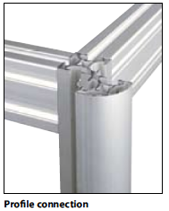

Framework
Supporting structure of the cabinet is the framework made of aluminium profiles, which are joint together by adaptors.In profiles there are special ducts, which enable the assembly of swing frame or optional creation of supporting structure for mounting equipment.
The framework of the cabinet is in standard set on the plinth. The height of the plinth depends on customer’s request: from 40 to 300 mm. 